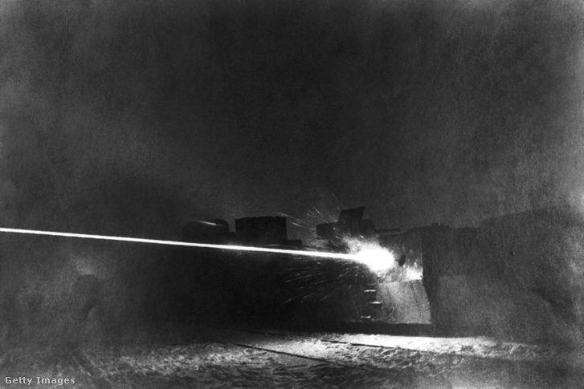
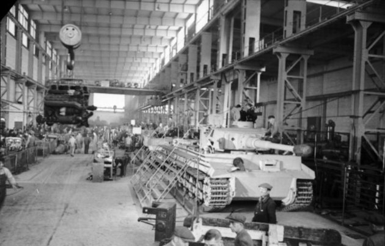
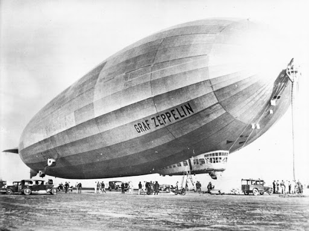
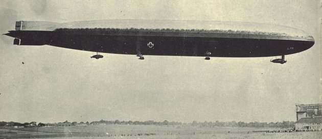
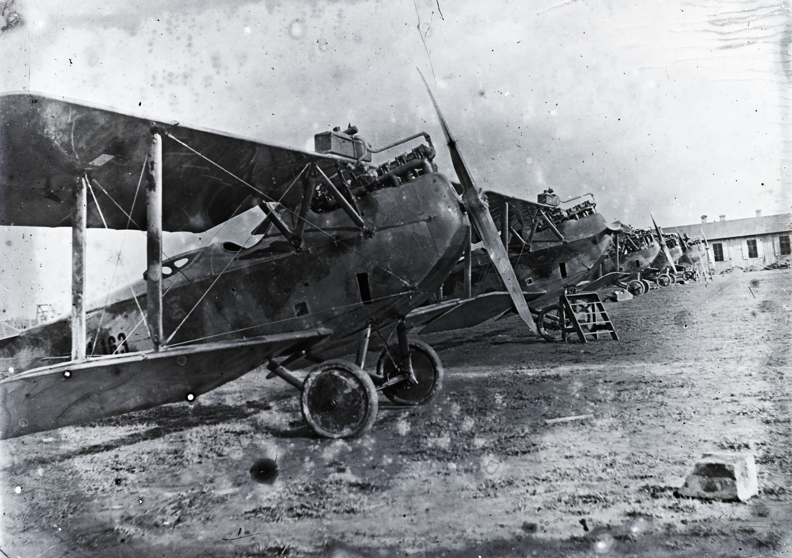

Harci járművek
Páncélvonat
A páncél vonatszörny, ami oda-vissza végigharcolta a fél világot.
A Zaamurec volt a huszadik század első felének egyik legrettegettebb fegyvere, a 130 tonnás önjáró lövegkocsi véres karrierje során többször is gazdát cserélt az ellenséges felek közt.
Az efféle vonatok általában egy páncélos mozdonyból és többféle, különböző funkciójú, eltérő módokon felfegyverzett kocsikból álltak: tüzérségi, légvédelmi, csapatszállító, tankelhárító, parancsnoki kocsik voltak a leggyakoribbak. Ezek a nagy tűzerejű, masszív szerkezetek viszonylag gyorsan el tudtak jutni a nagy távolságra lévő csataterekre is a már kiépített vasútvonalakon, és bevetésükkel komoly taktikai előnyhöz tudtak jutni a harcoló felek. Segítségükkel nagy mennyiségű felszerelést, lőszert, vasútpálya-javító eszközöket is célhoz lehetett juttatni.
Az amerikai polgárháború, a porosz-francia háború, a búr háborúk, a japán-orosz háború, az első és második világháború mind-mind láttak harcoló vonatokat, sőt a huszadik század második felében, az indokínai háborúban, de még a kilencvenes években, a balkáni háborúban is bevetették őket
Tankok
A harckocsi a gépesített szárazföldi hadviselés alapvető támadóeszköze. Az erősen felfegyverzett és páncélozott, ugyanakkor mozgékony harcjármű két lánctalpon halad előre, általában egy forgatható toronyba beépített löveggel és kiegészítő fegyverzettel szerelik fel.
A nyolcfős személyzet hatalmas zajban, füstben és hőségben dolgozott, a kilátást csak néhány nyílás biztosította.
A harcjármű súlya 28 tonna, a háborúban kifejlesztett 57 tonnás német Tigris nehézpáncélosok sokáig szinte legyőzhetetlennek bizonyultak. Szovjet oldalon a T-34-esek ugyan egyszerűbbek voltak, de eleget tettek a páncélvédettség, a tűzerő és a mozgékonyság hármas követelményének, s a háború legsikeresebb harckocsijává váltak.
A brit és amerikai típusok – a legismertebb az M4 Sherman – mind páncélzat, mind tűzerő tekintetében elmaradtak a német és a szovjet tankok mögött
Az első világháború során a levegő is hadszíntérré vált.
A sárkányballon
A ballonok tudatos katonai alkalmazása a XVIII. század végén kezdődött. A főként felderítésre és tüzérségi megfigyeléásre használt eszköz kezdetben gömb alakú volt, de ez a szélben hánykolódott, nehezen volt használható. Hogy szélirányban lehessen tartani, átalakították, ezután kapta a sárkányballon nevet, de a kötött léghajó elnevezés is ismert volt.
Kormányozható léghajók
A térfogatuk kezdetben 22 ezer, 1917-ben már 68.500 köbméter volt, összesített motorteljesítményük 630 lóerőről 2000 lóerőre emelkedett. 1916 végétől a repülőgépek „utolérték” a Zeppelineket, a következő évben ki is vonták őket a nyugati hadszíntérről.
A puska- és géppuskatűz mind a földről, mind a repülőgépekről kevés kárt okozott, jóval nagyobb veszélyt jelentettek az angolok kis gránátjai, melyeket felülről dobtak a Zeppelinekre, vagy a gyújtólövedékek, melyeket vagy a repülők, vagy a szintén jelentősen fejlődő légvédelmi ágyúk lőttek rájuk.
Repülőgépek
Az első világháború alapvető változásokat eredményezett a hadirepülőgépek alkalmazásában.
A magyar repülésnek nagy lendületet adott az első világháború. Hazánkban több repülőgépgyártó-üzem is működött, a legjobb gépeket az aszódi Lloyd-gyár készítette.
A háború végére a légierő önálló fegyvernemmé vált, ezzel párhuzamosan pedig a technológia is óriásit lépett előre. Rendkívüli mértékben fejlődtek a repülőgépek, a motorok, a fedélzeti és bombafegyverek, a híradástechnika – és a légvédelem is. Az anyagcsatát nehezen bíró, a harcok végén egyértelműen védekezésre kényszerített Németország viszont a vadászrepülőgépek fejlesztésében és alkalmazásában tudott kiemelkedőt nyújtani.
